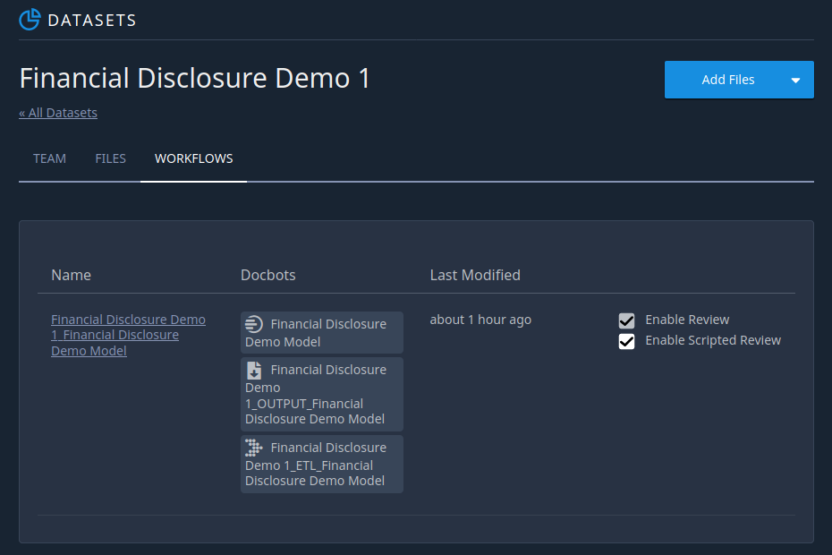

Auto Review
Introduction
Auto Review is a feature that allows users to programatically accept and reject predictions before Review. The criteria for accepting and rejecting predictions can be customized by the user.
To use Auto-review, Review and Scripted Review must be enabled from the workflows page. You can enable these features by clicking on workflows from your dataset page (shown below).
Using Auto Review
Auto review is currently only available via api call. To use it, the following steps must be performed:
Submit a document through your workflow
Retrieve the submission
Add a flag on each prediction result you wish to Auto Review in the submission to designate if you would like to accept or reject it
Submit the changes to Review
Example usage of Auto Review:
from indico.queries import (
WorkflowSubmission,
WaitForSubmissions,
RetrieveStorageObject,
SubmitReview
)
# Submit a document to workflow
submission_ids = client.call(
WorkflowSubmission(
workflow_id=workflow_id, files=["my_file.pdf"]
)
)
# Retrieve the submission results
submissions = client.call(WaitForSubmissions(submission_ids))
submission = submissions[0]
raw_result = client.call(RetrieveStorageObject(submission.result_file))
changes = raw_result["results"]["document"]["results"]
# Add flags to reject or accept predictions
for model, preds in changes.items():
for pred in preds:
if pred["label"] == "Name" and len(pred["text"]) < 3:
# Reject Name labels shorter than 3
pred["rejected"] = True
else:
# Accept all other labels
pred["accepted"] = True
# Submit the changes
client.call(SubmitReview(submission.id, changes=changes))
After submitting the changes using Auto-Review, the document will be available through Review for human review. Any predictions that were accepted through Auto-Review will be pre-approved on the review page (shown below). Reviewers can still modify and add to accepted predictions in Review.
Accepted predictions
{kind=link}
Normal predictions
{kind=link}
Rejected prediction
Predictions that were rejected through Auto-Review will not appear in Review (shown right). Human reviewers are still able to fill in these empty labels, or confirm no value. You can also confirm no value programmatically through Auto Review.
Auto Reject a Document
When submitting changes for a given document using SubmitReview, you can reject a document and send it to the exceptions queue using the “rejected” argument:
client.call(SubmitReview(submission.id, changes=changes, rejected=True))
Accepting No Value
Even when all predictions are accepted, a reviewer will still need to manually accept any labels that are empty. However, you can automatically accept empty values for specific labels using the “_no_value” key. Within the model results, set the dictionary key “_no_value” equal to a dictionary containing the name of your model keying to a list of labels. This list of labels should contain all the labels you would like to automatically accept empty values for. Accepted empty labels will appear in review as accepted labels. Please note that you can only auto-accept empty labels that do not contain any predictions. Labels that contain predictions should not be inlcuded in the list of no value labels. In the example below empty labels are only accepted if the specified label is not present in the predictions:
from indico.queries import (
WorkflowSubmission,
WaitForSubmissions,
RetrieveStorageObject,
SubmitReview
)
# Submit a document to workflow
submission_ids = client.call(
WorkflowSubmission(
workflow_id=workflow_id, files=["my_file.pdf"]
)
)
# Retrieve the submission results
submissions = client.call(WaitForSubmissions(submission_ids))
submission = submissions[0]
raw_result = client.call(RetrieveStorageObject(submission.result_file))
changes = raw_result["results"]["document"]["results"]
# Accept empty values for Name label
for model, preds in changes.copy().items():
pred_labels = set()
for pred in preds:
pred_labels.add(pred["label"])
if "Name" not in pred_labels:
changes["_no_value"] = {model: ["Name"]}
# Submit the changes
client.call(SubmitReview(submission.id, changes=changes))